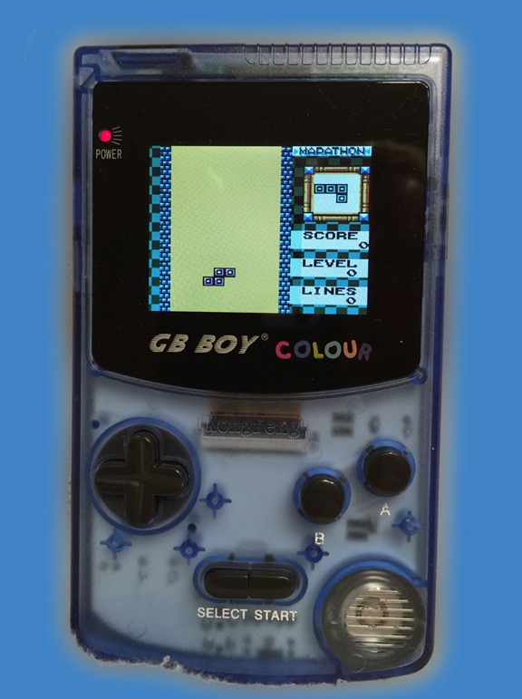
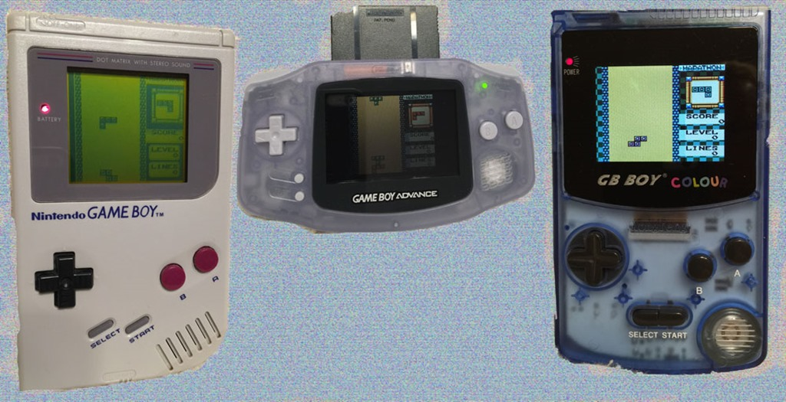

GB Boy Color: The Backlit Gameboy Color Nintendo Never Produced

{kind=link}

If you want to back into Gameboy games, don’t bother buying a used Nintendo Gameboy of any model. Those things are too dim and will break your eyes.
You want to enjoy those great old Gameboy and Gameboy Color games on a modern screen, so grab yourself a brand new GB Boy Color. This is a backlit Gameboy Color knockoff with a screen better than any Gameboy Nintendo ever released. It’s made by KongFeng, has about 60 build in games, and runs all original Gameboy and Gameboy Color cartridges on a great looking modern screen.
The a cheapest reliable place I’ve purchased these from is Ola Brasil on Aliexpress You can buy one there for $25.99 plus $2.11 for shipping which takes a few weeks. They go for much more on Ebay and other sites. That’s less than you can usually find any used Gameboy for.
See below, there is no comparison between GB Boy’s backlit screen vs the original Nintendo Gameboy, Gameboy Color or even Gameboy Advance. The sizes are off, but just check out how nice and bright the GB Boy color on the right is.
{kind=link}

The D-pad isn’t quite as good as the original models, but it’s good enough and the improved screen more than makes up for it.
I’ve found this is the cheapest and best looking way to play those old Gameboy Cartridges. Unless you are a Nintendo purist, check it out. Enjoy!
Related posts

Rule #2073: Never Lie to Your Kids
Don’t lie to kids or withhold the truth from them. Most little kids are smarter than you give them credit…
Better Never than Late Game Review-Guitar Hero Aerosmith
I wrote this tirade on this game tape a few months back and it was just lingering in Word Press…

Why You'll Never Succeed at 6400mg Advil Overdose
This is “Ask the Doctor” where readers ask questions of the world renounced general practitioner Dr. Charles V. Fullerton. Dear…

Why Your Boyhood Pain Never Works out the Way You Plan
I'll never forget the event that lead to my eventual disappearance. I came home from my math tutor and found…